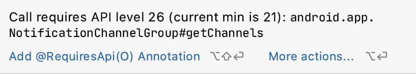
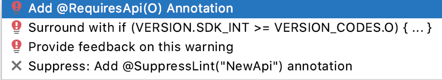
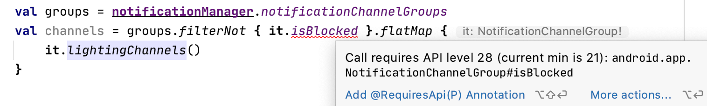

当 Android 的 Compat 库不能拯救你的时候
—— 还有为什么你应该避免使用 NewApi 抑制警告！

Compat 支持库的概念可能是 Android 主导手机领域的重要方面之一。不像是 iOS，Android 用户往往因为他们的手机不允许更新而在新版本推出后不能更新他们的操作系统，而这就是 Android 的碎片化问题。不过开发者们还是希望在他们的应用程序中使用最新的功能来竞争，而解决方法很简单：我们不需要在操作系统中添加新的 API，而是可以直接通过使用谷歌向我们提供的 "回溯" 版本，直接将这些 API 和你的应用一起打包部署。
这一切都始于 Jake Wharton 开发的 ActionBar Sherlock 项目。这个项目后来被 Google 采纳，放到了他们的 支持库 中。再后来，这个支持库被镜像为 Jetpack 下的 AndroidX 项目。
相同，但也不同
从表面上看，并不是所有的 Compat API 都是以同样的方式构建的。有些 API，比如 Fragment 的，是由完整的代码拷贝构建的。你要么使用操作系统中的 android.app.Fragment（实际上已经废弃）类，要么使用 androidx.fragment.app.Fragment 类。两者都不互相共享任何代码，也没有共同的基类（这就是为什么我们有两个版本的 FragmentManager）。
另一方面，例如 AppCompatActivity 这个类就是简单地扩展了原来的 Activity 类。另外 AppCompatImageButton 仍然是一个 ImageButton!
我们可以看到，有时这些 Compat 类只是起到一个桥梁的作用，用来添加缺失的功能，而有时它们甚至是完全一样的。
让我们看看另一个例子！
不过有一个领域随着时间的推移发生了很大的变化，那就是 Android 的通知 API。曾经有一段时间，每一次 Google I/O 大会都会宣布一个新的 API 方面的变化。
好在我们有 NotificationManagerCompat 来拯救我们！！！
比如说当我们需要获取通知通道组（NotificationChannelGroup）的时候：
val groups = notificationManagerCompat.notificationChannelGroups
我们不需要担心通道组是否被所有操作系统版本支持，因为它实际上会被在 Compat 类中处理掉：
public List<NotificationChannelGroup> getNotificationChannelGroups() {
if (Build.VERSION.SDK_INT >= 26) {
return mNotificationManager.getNotificationChannelGroups()
}
return Collections.emptyList()
}
如果我们是在 API 26 之前，我们只会得到一个空的列表，如果不是我们就会得到在 API 26 中引入的新通道组。
你可以在 NotificationManagerCompat 代码处找到更复杂的检查。
但如果你仔细观察，NotificationManagerCompat 会返回我们实际的 API 类。在上面的示例代码中列出了 NotificationChannelGroup，这并不是一个复制的 Compat 版本，不过因为它检查了 API 的可用性，我们可以安全使用它。
val groups = notificationManagerCompat.notificationChannelGroups
val channels = groups.flatMap {
it.channels.filter { it.shouldShowLights() }
}
这里我们只需要那些正在触发灯光的渠道组，也就是 API 26 及以上。由于我们使用的是比最低 SDK 级别更高的 API 级别的类，编译器会在这里警告我们：

编译器并不在意我们使用 NotificationManagerCompat 来达到目的。
我们有多种方法来解决这个问题。

将 RequiresApi 注解添加到我们的方法中并没有什么意义，因为我们会简单地将警告移到调用函数中。用检查包围似乎已经过时了，因为这个检查已经由 NotificationManagerCompat 完成，如上图所示。
看来最好的选择是选择抑制这个警告。
@SuppressLint("NewApi")
private fun checkChannels() {
val groups = notificationManagerCompat.notificationChannelGroups
val channels = groups.flatMap {
it.channels.filter { it.shouldShowLights() }
}
...
}
新的需求即将到来
假设我们得到了额外的要求，我们需要过滤掉被屏蔽的组。我们可以为此添加一个简单的检查：
@SuppressLint("NewApi")
private fun checkChannels() {
val groups = notificationManager.notificationChannelGroups
val channels = groups.filterNot { it.isBlocked }.flatMap {
it.channels.filter { it.shouldShowLights()}
}
...
}
一切看起来都很好，对吗？
你完了！
但我们刚刚引入了一个崩溃!
原因是：isBlocked 是在 API 28 才引入的，而我们没有进行检查! 尽管我们使用了 NotificationManagerCompat，但我们还是遇到了 API 级别上的问题!
而且因为我们抑制了 NewApi 的警告，所以我们在这个问题上没有收到任何警告!
所以当涉及到抑制警告的时候，我们就应该更加审慎!
解决方案？
由于只有在方法级别上才能解决这个问题（不适用单个语句），最好的方法是编写能满足我们需求的单行的方法。
多亏了扩展函数，这可以非常容易地实现：
@SuppressLint("NewApi") // SDK 26
fun NotificationChannelGroup.lightingChannels() =
channels.filterLightingOnes()
@SuppressLint("NewApi") // SDK 26
private fun List<NotificationChannel>.filterLightingOnes() =
filter { it.shouldShowLights() }
如果我们在上面的例子中使用这种方法，我们在添加 isBlocked 的时候就会得到警告：

当然，这对于我们开发者来说多了很多工作，但是我们的用户会很喜欢一个无崩溃的应用。
The Linter
上述例子不是 Compat 库的 Bug，而是被抑制隐藏了。这种情况也可能发生在许多其他 API 上。
- 不要掉进这个陷阱!
- 使用 Compat 库可能会给我们带来虚假的安全感，并欺骗我们相信我们不必考虑这些问题。
而且再次强调，尽量避免抑制 NewApi 警告！
相反，我们应该使用直接的版本检查，比如：
if (Build.VERSION.SDK_INT >= Build.VERSION_CODES.P)
不幸的是，lint 在这里不是很智能。它不会理解一些变型的版本检查，比如说：
.filter { Build.VERSION.SDK_INT >= Build.VERSION_CODES.P }
求助？
也许你们中的一些人想更多地研究这个，用一些自定义的 lint 规则。基本上，我们需要这样的东西：
@CheckedUpTo(Build.VERSION_CODES.P)
这将在内部完成类似于 SuppressLint("NewApi") 的工作，但只会针对不需要高于 P 版本的 API 调用。
目前，你可以让现有的 lint 功能为你工作。例如也可以在你自己的代码中添加 @RequiresApi(Build.VERSION_CODES.P)，强制让你处理这些问题。
记住，这些注释也被认为是你的代码读者的文档。
PS: 最新的 NotificationCompat alpha 版本将为我们带来 NotificationChannel 和 NotificationChannelGroup 的兼容版本。🥳
如果发现译文存在错误或其他需要改进的地方，欢迎到 掘金翻译计划 对译文进行修改并 PR，也可获得相应奖励积分。文章开头的 本文永久链接 即为本文在 GitHub 上的 MarkDown 链接。
掘金翻译计划 是一个翻译优质互联网技术文章的社区，文章来源为 掘金 上的英文分享文章。内容覆盖 Android、iOS、前端、后端、区块链、产品、设计、人工智能等领域，想要查看更多优质译文请持续关注 掘金翻译计划、官方微博、知乎专栏。